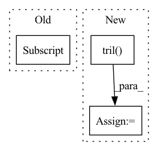

Pattern ID :19561
Before Change
def forward(self, user_ids, item_seqs, pos_items, ): // for training
// TODO: (more proper?) Positional Encoding
seqs = self.item_emb[item_seqs]
positions = np.tile(np.array(range(item_seqs.shape[1])), [item_seqs.shape[0], 1])
seqs += self.pos_emb[positions] // seems wrong/useless "positional embedding"
seqs = self.emb_dropout(seqs)
After Change
seqs *= ~timeline_mask.unsqueeze(-1) // broadcast in last dim
tl = seqs.shape[1] // time dim len for enforce causality
attention_mask = torch.tril( torch.ones((tl, tl)))
for i in range(len(self.attention_layers)):
// Self-attention, Q=layernorm(seqs), K=V=seqs
seqs = torch.transpose(seqs, 0, 1) // (N, T, C) -> (T, N, C)In pattern: SUPERPATTERN
Frequency: 3
Non-data size: 3
Instances Fragment ID: 63939287
Project Name: pmixer/sasrec.pytorch
Commit Name: a7e03b03f80de1d8f5e7563273981c4bf5f4f5b4
Time: 2020-09-15
Author: dreaming_hz@hotmail.com
File Name: model.py
M Class Name: SASRec
N Class Name: SASRec
M Method Name: forward(5)
N Method Name: forward(4)
M Parent Class: torch.nn.Module
N Parent Class: torch.nn.Module
M File Name: model.py
N File Name: model.py
M Start Line: 50
M End Line: 72
N Start Line: 60
N End Line: 100
Before Change
def _rel_shift(self, x):
"""向左shift让右上角都是0, 对角线是同一个值，[btz, n_head, q_len, k_len]
"""
zero_pad_shape = (x.size(0), 1) + x.size()[2:]
zero_pad = torch.zeros(zero_pad_shape, device=x.device, dtype=x.dtype)
x_padded = torch.cat([zero_pad, x], dim=1)
x_padded_shape = (x.size(1) + 1, x.size(0)) + x.size()[2:]After Change
x = x_padded[:,:,1:,:].view_as(x)
if zero_triu:
ones = torch.ones((q_len, k_len), device=x.device)
x = x * torch.tril( ones, k_len - q_len) [None,None,:,:]
return x
def forward(self, w, cat, r, attention_mask=None): Fragment ID: 63939284
Project Name: tongjilibo/bert4torch
Commit Name: e7a71b5780f0c193c2575f5dec687cb004c50ab2
Time: 2022-05-23
Author: tongjilibo@163.com
File Name: bert4torch/layers.py
M Class Name: RelPartialLearnableMultiHeadAttn
N Class Name: RelPartialLearnableMultiHeadAttn
M Method Name: _rel_shift(3)
N Method Name: _rel_shift(2)
M Parent Class: MultiHeadAttentionLayer
N Parent Class: MultiHeadAttentionLayer
M File Name: bert4torch/layers.py
N File Name: bert4torch/layers.py
M Start Line: 532
M End Line: 539
N Start Line: 535
N End Line: 546
Before Change
// TODO Check limit cases like n = 1, 2, 3 ; m = k/2 - 1, k/2, k/2 + 1
// Compute just the projection from SO(n) / SO(k)
n, m = x.size()
low = x[:, :m//2] .tril(-1)
up = x[:, :m//2 + m%2].triu(1)
// Compute the reflection of low
low = low.flip(-1).flip(-2)After Change
def frame(self, x, base):
if self.inverted:
x = x.t()
low = x[:, :self.n//2].tril( -1)
up = x[:, :self.n//2 + self.n%2].triu(1)
// Compute the reflection of low
low = low.flip(-1).flip(-2)
// S is square upper triangular Fragment ID: 63939281
Project Name: lezcano/geotorch
Commit Name: ada013178cb25a391184cd6ffcd920ccc2109e69
Time: 2020-03-11
Author: lezcano-93@hotmail.com
File Name: mantorch/orthogonal.py
M Class Name: Stiefel
N Class Name: Stiefel
M Method Name: frame(3)
N Method Name: frame(3)
M Parent Class: SO
N Parent Class: BaseManifold
M File Name: mantorch/orthogonal.py
N File Name: mantorch/orthogonal.py
M Start Line: 144
M End Line: 167
N Start Line: 95
N End Line: 102